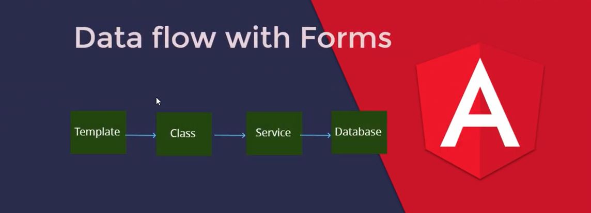

Forms Introduction
Why we use forms
Types of Forms
What we learn in upcoming tutorials
Forms Data flow
Interview Questations
Video
Link
{{'Forms Introduction' | titlecase}}
Why we use forms :
1) Submit any kind of information to Database
2) But Angular can not connect to database
3) So we need to send data to API
4) And API update the database
5) Example : login,signup,post,googleSearch is also a type of form .
Types of Forms :
There are Two Types of Forms present in Angular :
1) Template-driven form : Mostly work done in the component template that is .html page .
2) Reactive Forms : Mostly work done in the component class that is .ts file
What we learn in upcoming tutorials :
1) How to Make Forms
2) How to get Data from forms
3) How to add validations
4) How to Show Error messages
5) How to call API
6) How to show pre-fill forms
Forms Data flow :

Forms Data flow :
1) What type of forms in angular ?
A) Template driven forms , Reactive Forms
2) What is the data flow of Forms ?
A) from template ---> class (.ts file ) ---> service ----> Database